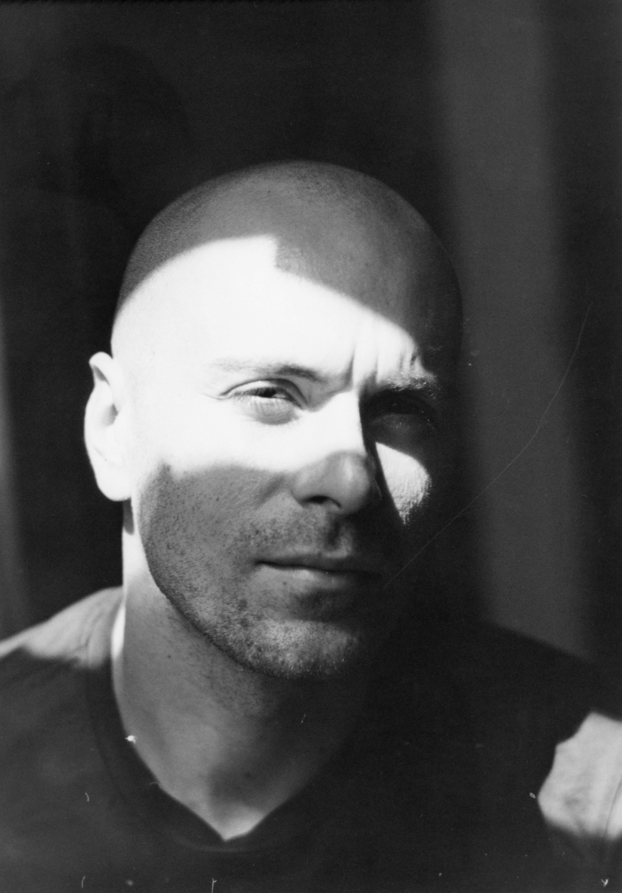

fotografo a pellicola e stampatore in camera oscura.
La mia passione per la fotografia è strettamente collegata al mio amore per la pellicola, supporto che ha permesso a quest'arte di nascere e crescere.
In un flusso creativo che parte dallo scatto passa per lo sviluppo e raggiunge il compimento nella stampa in camera oscura cerco di creare immagini senza tempo.